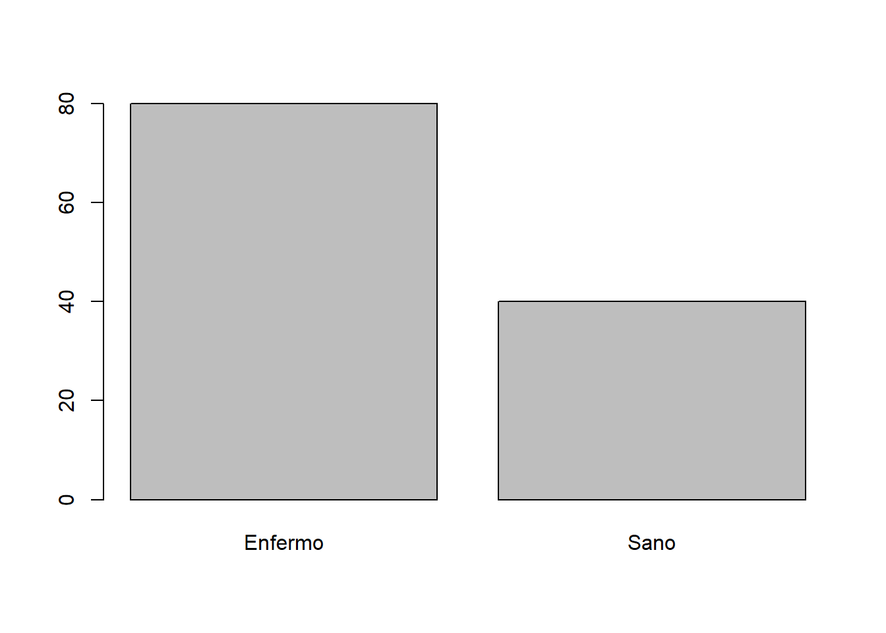
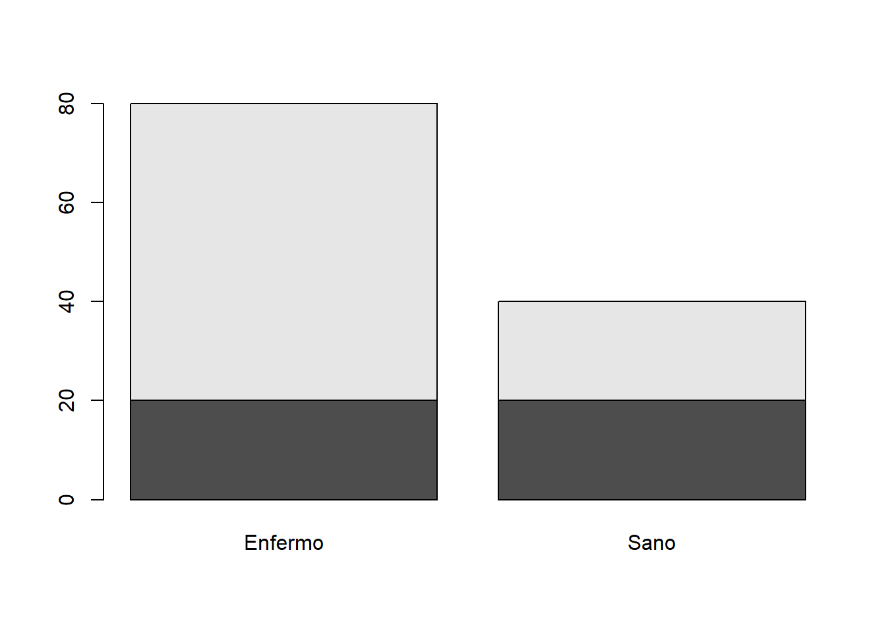
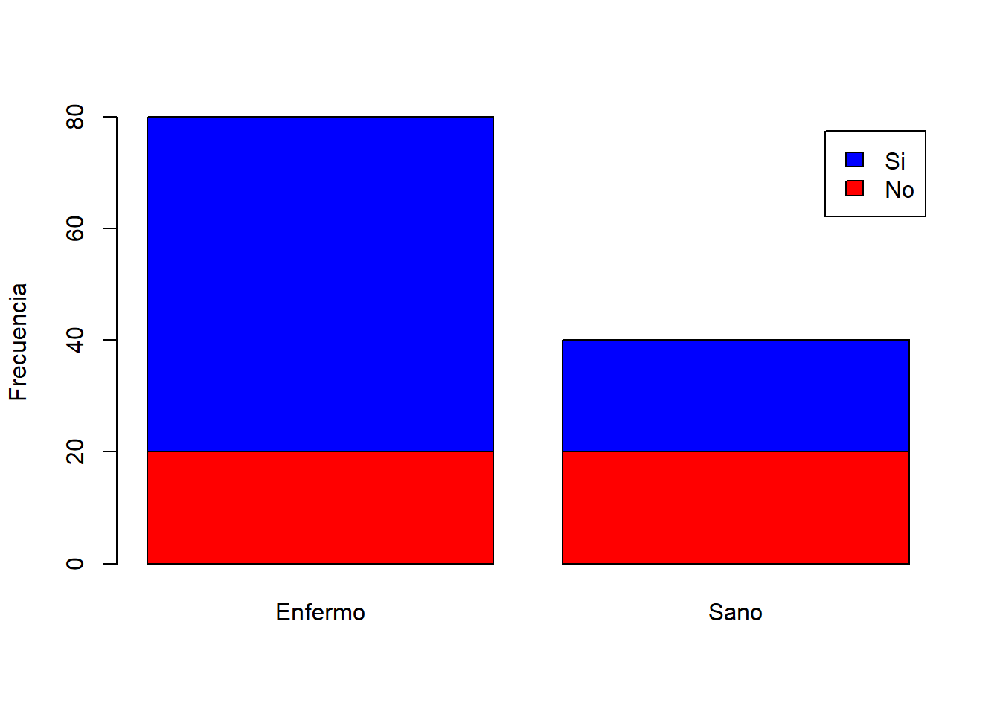

Capitulo 7 Estadística inferencial: Chi-cuadrado
Es momento de comenzar a analizar la información contenida en nuestra muestra y así poder inferir propiedades poblacionales.
En el práctico anterior aprendimos que en estadística inferencial existen dos grandes familias de pruebas estadísticas, las pruebas paramétricas y las no paramétricas. En este práctico trabajaremos con una prueba de tipo no paramétrica llamada Prueba de chi-cuadrado (X2)
7.1 Prueba de chi-cuadrado (X2)
La prueba de X2 es una de las técnicas estadísticas más utilizadas en la evaluación de datos de conteo o frecuencias, principalmente en los análisis de tablas de contingencia (f x c) donde se resumen datos categóricos.
- 1. Prueba de bondad de ajuste de X2
Esta variante de X2 permite determinar qué tan bien una muestra de datos categóricos se ajusta a una distribución teórica.
- 2. Prueba de independencia de X2
Esta variante de X2 permite determinar si el valor observado de una variable depende del valor observado de otra variable. Dicho de otro modo, se evalúa la existencia de independencia entre las categorías de las dos variables.
Los conteos o frecuencias de ambas variables se representan en una tabla bidimensional (filas x columnas), conocida como tabla de contingencia. Cada fila y cada columna corresponden a una submuestra particular.
7.2 Prueba de X2 en R
En R, la función chisq.test permite realizar pruebas de bondad de ajuste y de independencia de dos variables categóricas.
chisq.test(x, y = NULL)
Donde:
xEs un vector numérico o matriz.xeytambién pueden ser ambos factores.yEs un vector numérico; ignorado sixes una matriz. Siyes un factor,ydebe ser un factor de la misma longitud.
Además, es posible extraer la siguiente información a partir del modelo generado:
$statisticEl valor del estadístico de prueba de X2.$p.valueEl valor de probabilidad para la prueba.$methodUna cadena de caracteres que indica el tipo de prueba realizada.$data.nameUna cadena de caracteres que da el nombre(s) de los datos.$observedLos conteos observados.$expectedLos conteos esperados bajo la hipótesis nula.$residualsLos residuos del modelo. Se calculan como (observado - esperado) / sqrt (esperado).
7.3 Manos a la obra
Llegó el momento de aplicar lo aprendido. Primero, revisemos el tipo de variables contenidas en nuestra base de datos data. Recordemos que la función str() nos permite visualizar la estructura interna de un objeto en R. Otra función de diagnostico alternativa a str() es summary().
## 'data.frame': 120 obs. of 9 variables:
## $ Cultivo : Factor w/ 1 level "Arandanos": 1 1 1 1 1 1 1 1 1 1 ...
## $ Region : Factor w/ 4 levels "BioBio","La_Araucania",..: 4 4 4 4 4 4 4 4 4 4 ...
## $ Variedad : Factor w/ 2 levels "V1","V2": 1 1 1 1 1 1 1 1 1 1 ...
## $ Hectareas : num 1030 999 1118 1007 1078 ...
## $ Temperatura : num 16.8 16.9 15 15.7 15.1 15.9 16.1 15.6 17.4 14.7 ...
## $ costo_jh : int 13059 13026 12933 13027 13045 12949 13002 12968 12978 13056 ...
## $ rendimiento : num 6866 7122 7041 6892 6928 ...
## $ Perdida_plaga: num 35.1 34.3 31.7 40.5 35.6 33 38.1 37.9 34.8 34.4 ...
## $ mano_de_obra : int 3080 2728 3120 3135 3276 2966 2725 2874 2785 3193 ...La función str() nos muestra que nuestra base de datos posee tres diferentes variables categóricas (Factor) (Revisar práctico 3 para las definiciones de variables en R).
Detengan todo… algo no está bien. De acuerdo a str(), data solamente contiene nueve variables. Sin embargo, el diseño experimental original contemplaba la medición de doce variables. Las tres variables faltantes derivaban de una encuesta que se les hizo a los trabajadores en cada uno de los sitios de muestreo.
A ellos se les hicieron las siguientes preguntas:
Durante los últimos seis meses ¿Usted ha aplicado algún tipo de herbicida de forma manual?
Durante el mismo periodo de tiempo ¿Usted ha experimentado algún problema de salud?
¿Cuál es su equipo de fútbol favorito?
Para solucionar el problema, tendremos que agregar las tres variables a data. Primero debemos generar tres objetos en R y luego los agregamos como columnas a data.
- Variable uso de herbicida por parte del trabajador
- Variable estado de salud del trabajador
- Variable equipo de futbol favorito
¿Funcionó?…revisemos:
## 'data.frame': 120 obs. of 12 variables:
## $ Cultivo : Factor w/ 1 level "Arandanos": 1 1 1 1 1 1 1 1 1 1 ...
## $ Region : Factor w/ 4 levels "BioBio","La_Araucania",..: 4 4 4 4 4 4 4 4 4 4 ...
## $ Variedad : Factor w/ 2 levels "V1","V2": 1 1 1 1 1 1 1 1 1 1 ...
## $ Hectareas : num 1030 999 1118 1007 1078 ...
## $ Temperatura : num 16.8 16.9 15 15.7 15.1 15.9 16.1 15.6 17.4 14.7 ...
## $ costo_jh : int 13059 13026 12933 13027 13045 12949 13002 12968 12978 13056 ...
## $ rendimiento : num 6866 7122 7041 6892 6928 ...
## $ Perdida_plaga: num 35.1 34.3 31.7 40.5 35.6 33 38.1 37.9 34.8 34.4 ...
## $ mano_de_obra : int 3080 2728 3120 3135 3276 2966 2725 2874 2785 3193 ...
## $ Uso_herbicida: chr "SI" "SI" "SI" "SI" ...
## $ Estado_salud : chr "Enfermo" "Enfermo" "Sano" "Enfermo" ...
## $ Equipo : chr "UC" "UC" "UdeChile" "UdeChile" ...Fantástico!!!… acabamos de agregar tres nuevas variables categóricas a nuestra base de datos. Ahora, llegó el momento de hacer nuestra primera prueba de X2. Para ello, consideremos las variables uso de herbicida y estado de salud del trabajador.
Hagamos volar nuestra imaginación. Es posible que un investigador esté interesado en el bienestar de los trabajadores y se pregunte si el estado de salud de los trabajadores está asociado con la manipulación de herbicidas durante la jornada laboral. Para contestar esta pregunta, el investigador decide evaluar estadísticamente la (in)dependencia entre ambas variables. ¿Cómo lo hará?
7.3.1 Paso 0. Graficar los datos
Siempre, antes de realizar cualquier prueba estadística, es de extrema importancia realizar un gráfico. Esto nos permitirá entender y evaluar la información contenida en nuestras variables.
Una forma de representar gráficamente una variable categórica es mediante el uso de barras. En R, la función barplot() nos permite visualizar la distribución o frecuencia de cada una de las categorías de una variable categórica.
barplot(height, space = NULL, horiz = FALSE)heightEs un vector numérico o una matriz que describe las barras que forman el gráfico. El gráfico consistirá en una secuencia de barras rectangulares con alturas dadas por los valores en el vector o matriz.spaceEs la cantidad de espacio (como una fracción del ancho promedio de la barra) que queda antes de cada barra. Se puede asignar un solo número para todas las barras o se puede especificar para cada barra.horizEs un valor lógico. Si esFALSE, las barras se dibujan verticalmente con la primera barra a la izquierda. Si esTRUE, las barras se dibujan horizontalmente con la primera barra en la parte inferior.
Por ejemplo, podemos aplicar la función barplot() para generar un grafico con las frecuencias de las categorías de la variable estado de salud. Ya que la función barplot() no muestra directamente las frecuencias de una variable categórica. Es necesario calcular previamente dichas frecuencias, para lo cual usaremos la función table() :

Recuerden que para mejorar el aspecto de este gráfico podemos utilizar los parámetros xlab(), ylab(), col(), name(), entre muchos otros.
Ahora, intentemos graficar las dos variables categóricas de interés al mismo tiempo. Recordemos que barplot() funciona tanto para vectores como matrices. Para que R sepa que es una matriz, en height incluiremos una tabla de contingencia con nuestras dos variables de interés:

Fantástico!, lo logramos!!!. Sin embargo, en su estado actual el gráfico es poco informativo ¿no?. Lo que podemos hacer es modificar algunos parámetros gráficos para mejorar la calidad del gráfico.
barplot(table(data$Uso_herbicida,data$Estado_salud),
ylab="Frecuencia",
col=c("red","blue"),
legend.text=c("No","Si"))
A partir del gráfico que hemos hecho ¿Es posible hacer inferencias sobre la relación entre las variables estado de salud y la variable uso de herbicida? ¿Cuales?
7.3.2 Expresar la pregunta o hipótesis de investigación como una hipótesis estadística
El siguiente paso contempla expresar la pregunta o hipótesis de investigación en al menos dos hipótesis estadísticas contrastantes llamadas hipótesis nula (H0) e hipótesis alternativa (HA). En algunos casos, es posible establecer más de una hipótesis alternativa. Recordemos además que la H0 nunca se considera verdadera, aunque si puede ser rechazada por los datos.
Para evaluar estadísticamente la (in)dependencia entre ambas variables, podemos establecer el siguiente par de hipótesis:
HO: Las variables
XeYson independientes. No existen diferencias en el estado de salud respecto del uso de herbicidasHA: Las variables
XeYno son independientes. Si existen diferencias en el estado de salud respecto del uso de herbicidas
El objetivo es testear la veracidad de la HO. Para poner a prueba la HO, es necesario realizar una prueba estadística.
7.3.3 Elegir la prueba estadística de acuerdo a la hipótesis estadística y el tipo de datos
En líneas generales, las pruebas estadísticas representan un instrumento para validar o rechazar las hipótesis estadísticas. Si nuestro objetivo es poner a prueba una HO de independencia entre dos variables categóricas, la prueba de independencia de X2 es nuestra mejor opción.
7.3.4 Elegir nivel de significancia (\(\alpha\)) de la prueba para rechazar H0
En estadística, el nivel de significación de una prueba representa la probabilidad de tomar la decisión de rechazar la hipótesis nula cuando ésta es verdadera (error tipo I). Por convención, 0.05, 0.01 y 0.001 son los niveles de significancia más utilizados. Por ejemplo un nivel de significación de 0.05 indica un riesgo del 5% de concluir que existe una diferencia cuando no hay una diferencia real. En este curso utilizaremos \(\alpha=0.05\) como nivel de significancia.
Por otro lado, el valor de probabilidad de la prueba estadística (p-valor) es la probabilidad de obtener un efecto al menos tan extremo como el de los datos de la muestra, asumiendo la veracidad de la hipótesis nula.
Cuando realizamos un contraste de hipótesis, es posible rechazar la H0 cuando el p-valor es menor a \(α\). En aquellos casos en los cuales nuestros datos nos permitan rechazar H0, hablamos de un resultado estadísticamente significativo.
7.3.5 Paso 4. Calcular el estadistico y la probabilidad de la prueba estadística
Una vez elegida la prueba estadística y el nivel de significancia, podemos pedirle a R que realice las estimaciones del estadístico de la prueba y el p-valor. Es importante mencionar que tanto el estadístico de la prueba como el p-valor dependerán de nuestros datos. El valor observado puede variar aleatoriamente entre diferentes muestras aleatorias.
Las diferentes pruebas de hipótesis utilizan diferentes estadísticos de prueba según la distribución de probabilidad asumida en la H0. En el caso de la prueba de independencia de X2 , el estadístico de la prueba se llamará… wait for it… estadístico de X2.
Calculemos el estadístico de X2 y el p-valor para una prueba de independencia de X2 utilizando las variables categóricas estado de salud y uso de herbicida:
##
## Pearson's Chi-squared test with Yates' continuity correction
##
## data: data$Uso_herbicida and data$Estado_salud
## X-squared = 6.4172, df = 1, p-value = 0.0113R nos acaba de entregar valiosa información para tomar la decisión de rechazar (o no) nuestra hipótesis de independencia entre las variables categóricas estado de salud y uso de herbicida:
X-squared= 6.4171875 Es el estadístico de la pruebadf= 1 Grados de libertadp-value= 0.0113021 p-valor
7.3.6 Paso 5. Interpretar los resultados de la prueba estadística
Los resultados de la prueba realizada muestran que el p-valor es menor a 0.05. Entonces, tenemos suficiente evidencia para rechazar la hipótesis nula de independencia entre las variables estudiadas. La forma correcta de reportar los resultados de nuestro análisis es la siguiente:
Nuestro análisis nos permite concluir que la proporción de trabajadores enfermos fue significativamente mayor en trabajadores que manipularon herbicidas durante la jornada laboral en comparación a aquellos trabajadores que no manipularon herbicidas (X2 (1) = 6.4171875, p< 0.05).